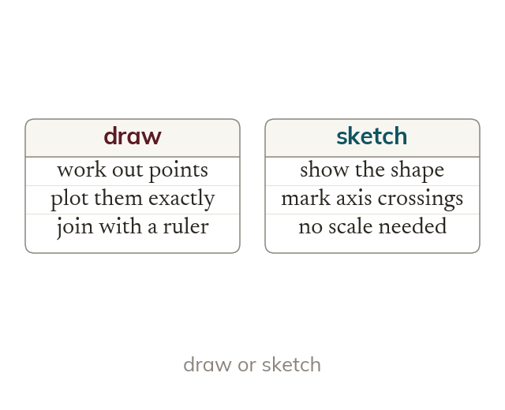

Draw or sketch
Drawing a graph means plotting calculated points accurately. Sketching means showing the shape, with the axis crossings marked.
To draw a graph means to calculate points and plot them accurately, while to sketch a graph means to show its correct shape and position with the axis crossings marked. A sketch needs no scale and no table of values.